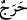

Bu, “sana” Allah tarafından “indirelen bir Kitab’dır. Onunla” insanları “uyarma ve
inananlara öğüt” verme “husûsunda göğsünde bir sıkıntı olmasın.” Yani, onun
gerçekliği konusunda şüphe etme. Nitekim başka bir ayette şöyle buyurulmuştur: “Eğer
sen, sana indirdiğimizden kuşkuda isen, senden önce Kitab okuyanlara sor.”
(Yunus, 10/94) Ancak burada şüphe değil, şüphenin sonucu olan sıkıntıdan
bahsedilmiştir. İmanda yakîn mertebesine ulaşanın göğsü genişlediği gibi şüpheye
düşenin de göğsü daralır.
Ayette Nebi (a.s.)’a hitab edilmiştir. Ancak kastedilen ise ümmettir. Yani,“Asla
tereddüt etmeyin ve şüpheye düşmeyin.” demektir.
“__WORD__ (sıkıntı) kelimesinin şüphe anlamında değil de, hakiki manâsında olması da
câizdir. Yani: “Ey Muhammed, seni yalanlamalarından korkarak Kur’an’ı tebliğ
konusunda sende bir göğüs darlığı olmasın.” Çünkü Rasûlullah (a.s.), kavminin
kendisini yalanlamasından ve büsbütün hakikatten yüz çevirmelerinden korkuyordu. Bu
yüzden vazifesini yerine getirme hususunda göğsü daralıyor ve kendisine bir genişlik,
bir inşirah gelmiyordu. Bu sebeple Allah onu temin etti ve ona güvence verdi. Kavminin
inkarcılarına aldırış etmesini yasakladı.
3. Rabbinizden size indirilene (Kur’an’a) uyun. O’nu bırakıp da başka dostların
peşlerinden gitmeyin. Ne kadar da az öğüt alıyorsunuz!
İnanmakla yükümlü olan ey insanlar, “Rabb’inizden size indirilene” Kur’an’a “uyun
ve O’ndan” sizi hakka ulaştıracak olan şeyleri indiren Rabb’inizden “başka”, Allah
Teâlâ’yı bırakıp gerek insanlardan, gerekse cinlerden olan “dostlara” Allah’a karşı
gelme hususunda itaat ederek “uymayın.”
“Ne kadar da az öğüt alıyorsunuz!” Yani, pek az düşünüyorsunuz ya da düşünmeye
az vakit ayırıyorsunuz. Bu sebeple size verilen öğütler tesir etmiyor. Size bildirilenlerin
gereğiyle amel etmiyorsunuz. Allah’ın dinini terk ediyor ve başkasının ardı sıra
gidiyorsunuz.
Sonraki ayette Cenab-ı Hak, geçmiş ümmetlerin dostlarının dinine tâbî olmakta
ısrarları sebebiyle başlarına gelenlerden ibret almadıkları takdirde onları tehdid ederek
şöyle buyuruyor:
[1]. Aclûnî, II, 130